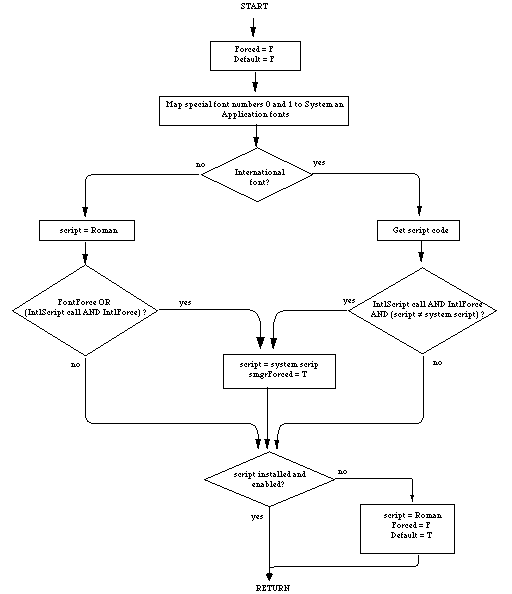

|
|
This Technical Note describes how the Script Manager uses the font family ID to
determine a script code.
[Jun 01 1989]
|
Introduction
The traps _FontScript, _IntlScript, and _Font2Script
all use a font family ID to determine the script interface system code that
they return. This Note describes the process, the way the Script Manager
renumbers the Chicago font for non-Roman systems, and the equation for
calculating Script IDs from font family IDs.
On a Roman system the Chicago 'FOND' is numbered zero, but this causes
no confusion since Chicago is also the system font. Non-Roman systems must
renumber Chicago so that it will not interfere with the mapping of 'FOND'
ID = 0 to the correct system 'FOND'. Typically Chicago is
renumbered to 16383.
In Inside Macintosh, Volume V-293, The Script Manager, the descriptions
of _FontScript, _IntlScript, and _Font2Script state
that the current font identification number (e.g., 'FOND' ID) is used
to calculate the correct script code. The equation for calculating script
codes from 'FOND' IDs is as follows:
For a specific example, consider the Kyoto font which is one of the fonts
included in KanjiTalk. Its 'FOND' ID is 16385. Plugging that value
into the equation above, we get: script = ((16385-16384) DIV 512) +1. Which
results in a value of one, the script code for the Kanji script system.
Note that this means that script systems other than Roman can only have 512
separate font families. Furthermore, Roman font families (FOND) must not have
an ID greater than 16383, and 'FOND' ID 16383 is reserved for Chicago
on non-Roman systems.
Back to top
So How Do They Work?
_FontScript, _IntlScript, and _Font2Script begin by
setting two Script Manager globals, Forced and Default to
false. Then the two special font family ('FOND') numbers zero and one
are mapped to the System and Application font.
Next the 'FOND' ID is tested to see if it is an international font.
_FontScript and _IntlScript simply take the value out of the
txFont field of the current grafPort. _Font2Script
uses the value passed to it. The test is simply:
IF FONDid < $4000 {16384}
script is Roman so return 0
ELSE
|
Once the script code has been determined, the routine looks at the Script
Manager globals FontForce and IntlForce.
If the currently installed script is Roman and fontForce is true, or
if intlForce is true and the routine called was _IntlScript,
then the value returned will be the current system script. If the installed
script is not Roman; the script code calculated will be returned when the
routine called was _IntlScript, intlForce is true, and the
script code does not equal the system script.
Once the script code to be returned as been calculated, a final check is made
to be sure that the script is installed and enabled. If it is not; Roman is
returned, and Forced is set to false and Default is set to
true.
Back to top
What's This Forced Stuff?
Two Script Manager globals, fontForce and intlForce, are
flags that support compatibility. Turning fontForce on will cause
Roman fonts to be interpreted as belonging to the system script. This provides
compatibility for applications that hard-code font numbers.
For example, the Arabic script interface system provides a cdev which lets a
user turn fontForce on. When a user does this, any Roman fonts will
be mapped to an Arabic font. Note this is only a partially effective measure
since the user still does not have complete control over fonts.
It should also be noted that if a user sets fontForce on via the cdev,
values returned for fonts with family IDs in the range $0002 to $3FFF (Roman
'FOND' ID range) may vary. This is not a good feature for
applications that allow mixed text. To avoid this problem, an application can
turn the fontForce flag off before calling _Font2Script or
_FontScript. The flag value should be saved before turning it off,
and restored later.
The intlForce flag determines how the call IUGetIntl behaves.
If this flag is on, IUGetIntl will always return the international
resources ('itlx' where x is 0-2) corresponding to the system
script. When intlForce is off, the font in the current port will be
used to determine which international resources will be returned. This flag
lets an application control what date formats, sorting routines, etc. will be
used.
For that reason, before calling any of the international utility routines or
using the binary to decimal routines, an application should verify that
thePort and thePort^.txFont are set correctly, or that
intlForce is set properly.
Let's Look at a Picture
The flowchart in Figure 1 illustrates the operation of _FontScript,
_IntlScript, and _Font2Script, and how they are affected by
the global flags fontForce and intlForce.

Figure 1 - Operation Flowchart
Back to top
References
Inside Macintosh, Volume I-493, The International Utilities Package
Inside Macintosh, Volume V-293, The Script Manager
Inside Macintosh, Volume V-287, The International Utilities Package
Back to top
Downloadables
|

|
Acrobat version of this Note (144K).
|
Download
|
|